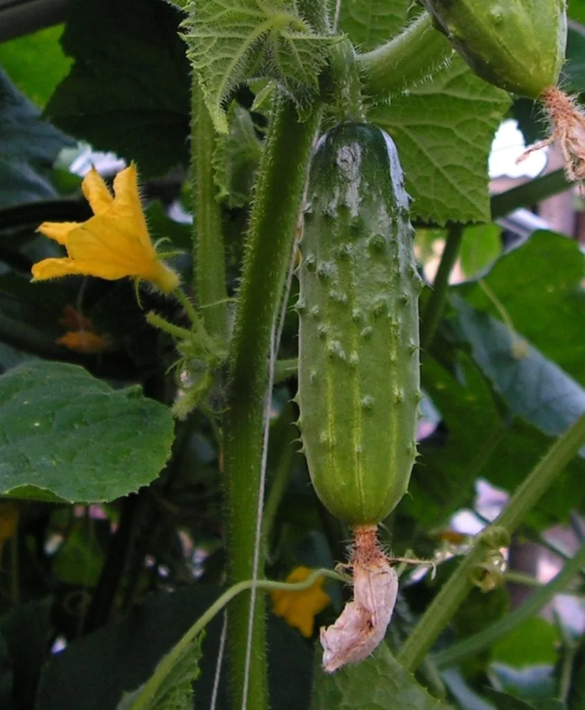

农作物与经济植物 · 植物界
黄瓜 Cucumis sativus

黄瓜的果实清脆多汁，可生食、凉拌和炒食，是夏季重要的蔬菜作物，喜温暖湿润，南北各地广泛栽培。
- 分类
- 门被子植物门纲双子叶植物纲目葫芦目科葫芦科属黄瓜属
- 栖息环境
- 温带与热带的菜地、温室，喜温暖湿润、光照充足
- 地理分布
- 原产印度一带，现主产于中国、印度、土耳其、伊朗等地
- 保护级别
- 暂无评估（栽培作物）
物种志
黄瓜是一年生攀援草本，茎蔓生，有棱和刺毛，具卷须。叶片掌状心形，边缘有锯齿，表面粗糙。花单性同株，黄色，五瓣，雌花子房下位，常有小刺瘤。果实为瓠果，圆柱形，长 15–40 cm，表面有刺瘤或光滑，颜色绿、白或黄。
黄瓜原产印度与喜马拉雅山南麓一带，栽培历史已有 3000 多年，汉代经西域传入中国，古代称“胡瓜”。它喜温暖湿润、光照充足，不耐霜冻，适宜在疏松肥沃、排水良好的土壤中种植，多搭架栽培。黄瓜果实清脆多汁，可生食、凉拌、炒食、做汤，也可腌制酱菜；富含水分、维生素和矿物质，热量低。黄瓜的卷须和刺瘤是品种特征。中国是世界上最大的黄瓜生产国，各地均有栽培，以温室和露地栽培为主。
形态与习性
- 茎蔓生攀援，有卷须
- 叶掌状心形，表面粗糙
- 果实瓠果，圆柱形，长 15–40 cm
- 花黄色，雌雄同株
- 用途生食、凉拌、炒食、腌制
- 习性喜温暖湿润，不耐霜冻
趣味知识
- 黄瓜的果实表面常有刺瘤，是品种的特征之一。
- 黄瓜含水量很高，清脆多汁、热量低，是夏季爽口蔬菜。
- 黄瓜古称“胡瓜”，汉代经西域传入中国。